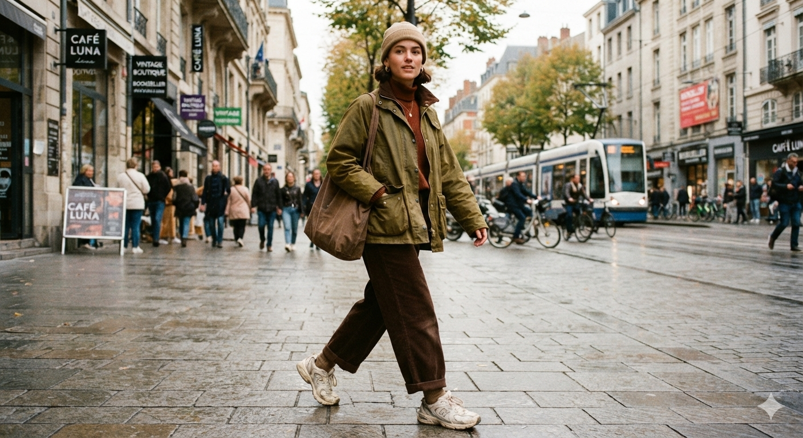
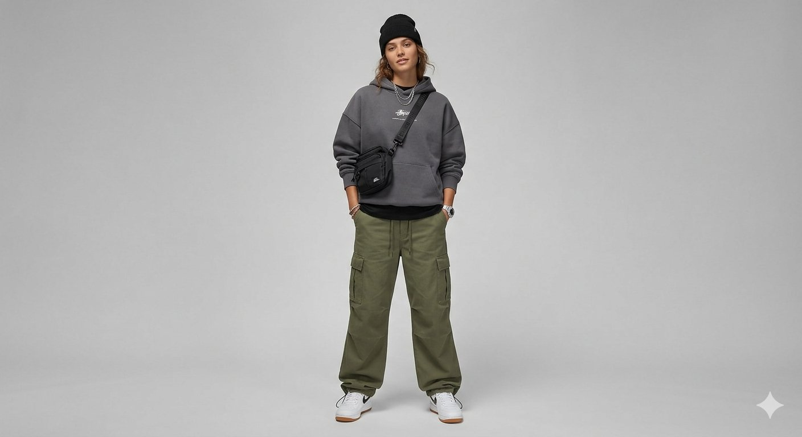
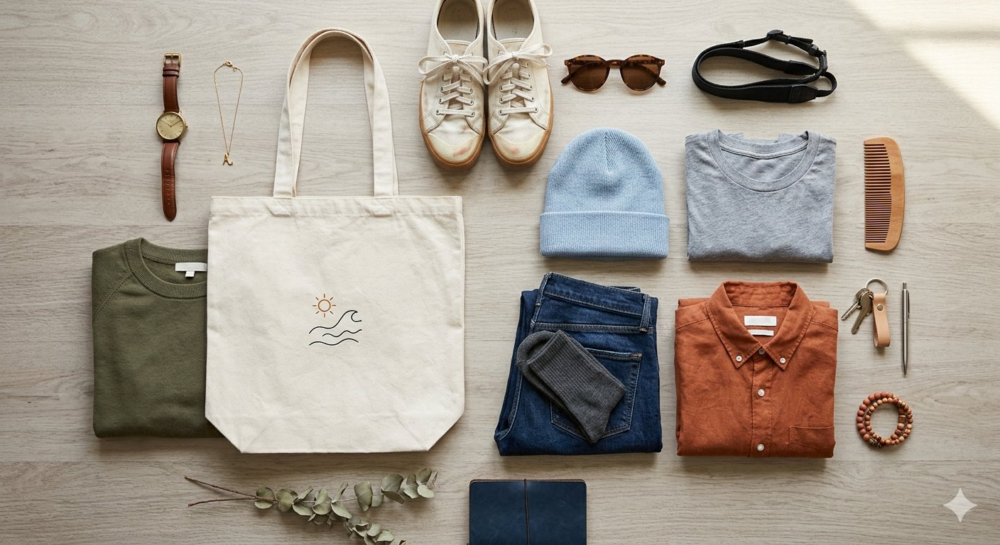
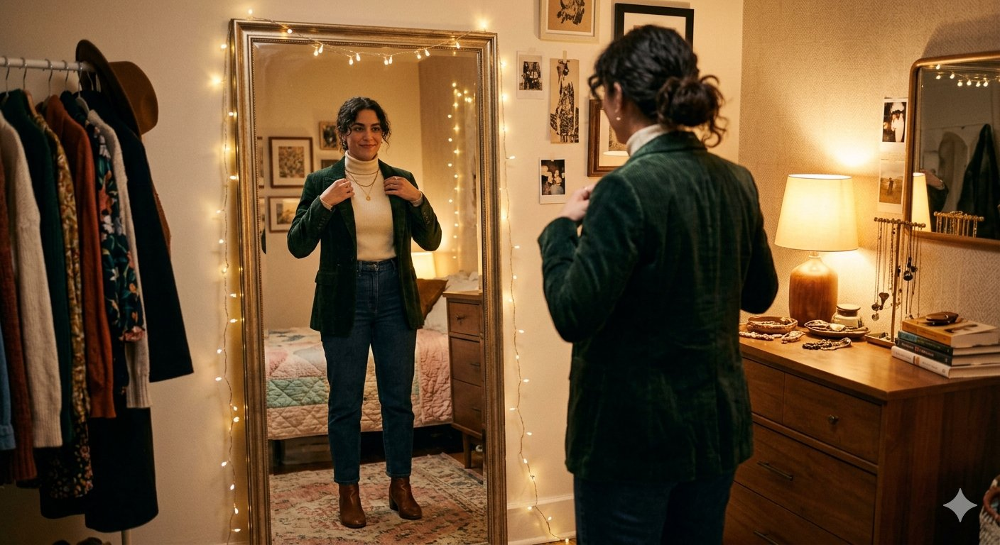
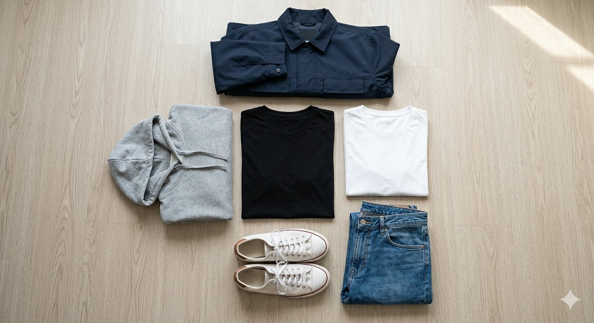
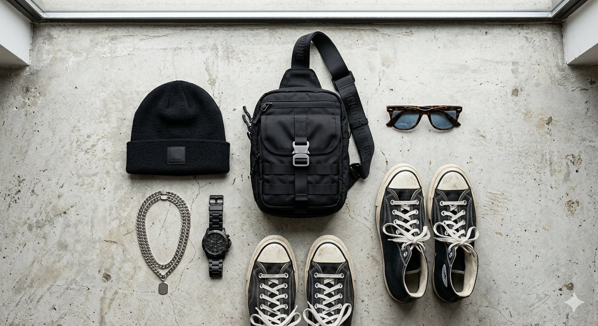
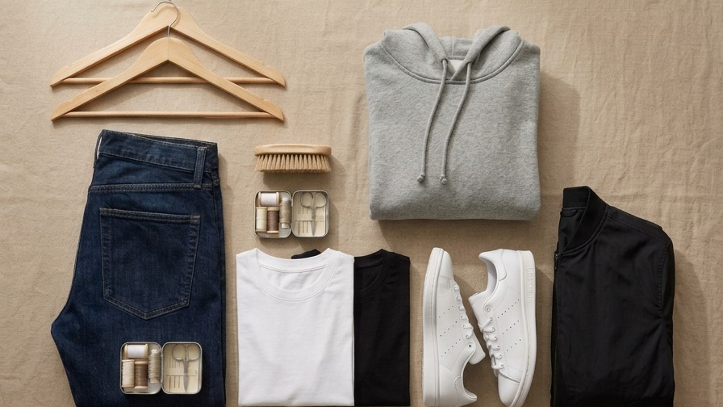

TENDENCIAS5 tendencias que dominarán el otoño 2026/2027
Tonos tierra, prendas oversize y capas para crear looks cómodos, urbanos y con actitud.
Leer artículo
GET READY WITH US
Tendencias, consejos de estilo y recomendaciones para ayudarte a crear outfits que se sientan como tú.

TENDENCIASTonos tierra, prendas oversize y capas para crear looks cómodos, urbanos y con actitud.
Leer artículo
MODA UNISEXPrendas clave que funcionan con distintos estilos y siluetas para crear un outfit cómodo, personal y fácil de combinar.
Leer artículo
SOSTENIBILIDADPequeñas decisiones, prendas versátiles y cuidado de la ropa para construir una forma de vestir más consciente.
Leer artículo
ESTILOUna guía para elegir ropa que te represente, en lugar de comprar solamente lo que está de moda.
Leer artículo
GUÍA DE COMPRAPoleras, jeans, polerones y chaquetas que te ayudan a crear muchos outfits con menos prendas.
Leer artículoAprende a combinar poleras, polerones y chaquetas sin perder comodidad ni personalidad.
Leer artículo
ESTILOGorras, bolsos, cadenas y zapatillas pueden cambiar por completo un look sencillo sin perder comodidad.
Leer artículoPequeños hábitos de lavado, guardado y reparación que ayudan a extender la vida útil de tus prendas favoritas.
Leer artículo
GUÍA DE COMPRASRevisa tus medidas, compara la tabla de tallas y compra con más seguridad sin depender solo de la talla que usas habitualmente.
Leer artículoAún no tenemos artículos en esta categoría. Pronto habrá nuevas ideas para inspirarte.
Explora nuestro catálogo y combina las ideas del blog con tu propio estilo.